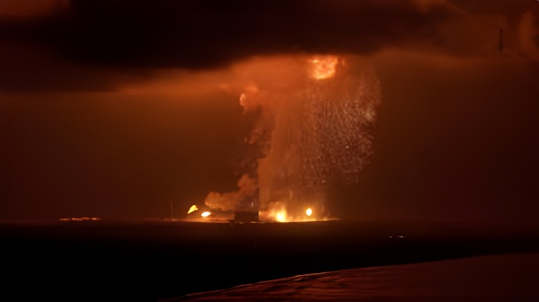

Dans la nuit du 28 mai 2026, la fusée New Glenn de Blue Origin s'est embrasée lors d'un test d'allumage statique sur son pas de tir à Cape Canaveral, en Floride. Aucun blessé n'est à déplorer, mais les dégâts sont considérables : la fusée est détruite, le complexe de lancement est gravement endommagé, et le programme lunaire de la NASA voit son principal contrepoids à SpaceX mis hors jeu. Alors qu'Elon Musk prépare pour juin 2026 la plus grande introduction en Bourse de l'histoire américaine, l'explosion survient à un moment particulièrement cruel pour Jeff Bezos, dont l'entreprise spatiale peinait déjà à s'imposer face à la domination écrasante de SpaceX.
Le 28 mai 2026, vers 21h heure locale, une boule de feu orange a illuminé le ciel de Floride. La fusée New Glenn de Blue Origin venait d'exploser sur le pas de tir du Launch Complex 36 de la Cape Canaveral Space Force Station, lors d'un test d'allumage statique — une procédure standard consistant à allumer les moteurs au sol, la fusée maintenue au sol par des attaches, pour vérifier leur bon fonctionnement avant un lancement. Les maisons des quartiers riverains de Cape Canaveral et Cocoa Beach ont été secouées ; les habitants ont envahi les réseaux sociaux à la recherche d'explications. Le lancement effectif de la fusée était prévu la semaine suivante, pour mettre en orbite 48 satellites internet Amazon Leo.
Blue Origin a rapidement confirmé l'incident via son compte X, indiquant que tout le personnel avait été retrouvé sain et sauf. Jeff Bezos a lui-même pris la parole quelques heures plus tard : il est trop tôt pour connaître la cause profonde, mais les équipes travaillent déjà à l'identifier. « Journée très difficile, mais nous reconstruirons tout ce qui doit l'être et nous reviendrons voler. Ça en vaut la peine. » Le pas de tir a subi de graves dommages, et des débris ont été retrouvés dans les eaux alentour, Blue Origin ayant alerté le lendemain que des morceaux pourraient s'échouer sur les plages voisines dans les jours et semaines à venir.
New Glenn, dont le premier vol orbital remonte au 16 janvier 2025, n'en était qu'à son quatrième lancement prévu. Son baptême de l'air avait été salué comme un succès — la fusée avait atteint l'orbite — mais le premier étage réutilisable avait manqué son atterrissage sur la barge en mer, faute d'une rallumage correct des moteurs. Le deuxième vol, en novembre 2025, s'était mieux déroulé, confirmant la récupération du booster. Mais le troisième, en avril 2026, avait vu le deuxième étage tomber en panne, laissant un satellite commercial dans une orbite incorrecte. La Federal Aviation Administration (FAA) avait autorisé la reprise des vols après analyse de cet échec. L'explosion du 28 mai signe donc la fin du quatrième appareil avant même son envol.
Au-delà du revers commercial pour Blue Origin, l'explosion a des répercussions directes sur le programme lunaire Artemis de la NASA. New Glenn est la fusée prévue pour lancer le module lunaire Blue Moon de Blue Origin, qui devait servir à déposer des astronautes sur la surface lunaire dans le cadre d'Artemis III. Dans les jours précédant l'explosion, la NASA avait justement attribué à Blue Origin de nouveaux contrats, dont un lancement prévu à l'automne 2026 pour un atterrisseur Blue Moon chargé d'équipements scientifiques. Ces plans sont désormais en suspens.
La professeure Wendy Whitman Cobb, spécialiste de la politique spatiale à l'Air Force School of Advanced Air and Space Studies, a résumé la situation sans ambages : l'incapacité de Blue Origin à lancer Blue Moon dans un avenir proche risque fort d'éliminer la société de la course pour Artemis III. Le programme lunaire de la NASA dépend ainsi, pour l'heure, entièrement de SpaceX. L'administrateur de la NASA, Jared Isaacman, a pour sa part reconnu que « les vols spatiaux sont impitoyables » et promis de préciser les impacts sur le calendrier d'Artemis dans les prochains jours.
Elon Musk, dont SpaceX a lui-même connu de nombreuses explosions au cours de son développement, a exprimé ses condoléances à Blue Origin via X : « Désolé de voir ça, j'espère que vous vous rétablissez rapidement. » Un message sobre, mais dont le timing n'a échappé à personne : SpaceX prépare pour la mi-juin 2026 son introduction en Bourse sur le Nasdaq, annoncée comme la plus grande IPO de l'histoire des marchés américains. La valorisation cible avoisine 1 750 milliards de dollars — soit plus que la capitalisation d'Aramco lors de son entrée en Bourse en 2019. SpaceX détient déjà plus de 80 % des lancements orbitaux mondiaux en 2025, et son réseau Starlink compte plus de 10 000 satellites en service.
Premier vol orbital de New Glenn. La fusée atteint l'orbite, mais le booster réutilisable rate son atterrissage en mer. Blue Origin célèbre néanmoins un succès historique après 25 ans d'existence.
Deuxième vol de New Glenn. La récupération du premier étage réussit cette fois. Le programme retrouve de la crédibilité aux yeux de la NASA et des clients commerciaux.
Troisième vol. Une panne du deuxième étage place un satellite commercial dans une orbite incorrecte. La FAA suspend les vols puis, après analyse, autorise la reprise.
La NASA attribue à Blue Origin de nouveaux contrats Artemis, incluant un lancement de l'atterrisseur Blue Moon prévu à l'automne 2026. La confiance semble rétablie.
Explosion de New Glenn lors du test d'allumage statique précédant le quatrième vol. La fusée est détruite, le pas de tir gravement endommagé. La cause reste inconnue ; enquête ouverte.
L'explosion de New Glenn ne fait que creuser l'écart entre les deux empires spatiaux fondés par des milliardaires américains. SpaceX, née en 2002 de l'ambition de Musk de rendre l'humanité multiplanétaire, s'est imposée par une culture de l'échec rapide et de l'itération — les premières Falcon 9 ont elles aussi explosé, avant de devenir le lanceur le plus fiable du monde. Blue Origin, fondée par Bezos dès 2000, a longtemps préféré la prudence au rythme. Aujourd'hui, alors que SpaceX s'apprête à entrer en Bourse avec une valorisation record, Bezos doit reconstruire une fusée, un pas de tir et une crédibilité. La course à la Lune, à Mars et aux étoiles ne s'annonce pas gagnée pour tout le monde.
On the night of May 28, 2026, Blue Origin's New Glenn rocket was destroyed in a massive fireball at Cape Canaveral's Launch Complex 36 during a routine engine-firing test. No one was injured, but the damage is severe: the rocket is gone, the launchpad severely damaged, and NASA's main alternative to SpaceX for lunar missions is temporarily out of the picture. As Elon Musk prepares for what may be the largest IPO in American financial history, the explosion could not have come at a worse moment for Jeff Bezos — or a better one for his rival.
At around 9 p.m. local time on May 28, 2026, an orange fireball lit up the Florida sky. Blue Origin's New Glenn rocket had just exploded during a static fire test at Launch Complex 36 — a standard pre-launch procedure in which the rocket's engines are ignited while the vehicle remains bolted to the pad. Homes in nearby Cape Canaveral and Cocoa Beach were shaken; residents flooded social media wondering what had happened. The rocket was scheduled to lift off the following week to deliver 48 Amazon Leo internet satellites into orbit.
Blue Origin quickly confirmed the incident on X, stating that all personnel were accounted for. Jeff Bezos followed with his own post, saying it was too early to know the root cause but that the investigation was already underway. "Very rough day," he wrote, "but we'll rebuild whatever needs rebuilding and get back to flying. It's worth it." The launchpad suffered serious damage and the company warned the next day that debris from the explosion could wash ashore on local beaches in the days and weeks ahead.
New Glenn's debut orbital flight took place on January 16, 2025 — a milestone achievement for Blue Origin after 25 years in existence. The rocket successfully reached orbit, though its reusable first-stage booster failed to land on the recovery ship at sea. The second launch in November 2025 corrected that, with a successful booster recovery. But the third flight, in April 2026, ended in a second-stage malfunction that left a commercial satellite in the wrong orbit. After reviewing Blue Origin's failure analysis, the Federal Aviation Administration cleared the rocket for a fourth flight — the one that never came.
Beyond the commercial blow to Blue Origin, the explosion carries direct consequences for NASA's Artemis lunar program. New Glenn is the designated launcher for Blue Origin's Blue Moon lander, which was set to ferry payloads — and eventually astronauts — to the lunar surface as part of the Artemis missions. Just days before the explosion, NASA had awarded Blue Origin new launch contracts, including one for an autumn 2026 Blue Moon lander mission. Those plans are now on hold pending the investigation's outcome.
Wendy Whitman Cobb, a professor at the U.S. Air Force School of Advanced Air and Space Studies, put it bluntly: Blue Origin's inability to launch Blue Moon anytime soon is likely to put the company out of the running for Artemis III, leaving NASA's lunar exploration program entirely dependent on SpaceX. NASA Administrator Jared Isaacman acknowledged the explosion, noting that "spaceflight is unforgiving," and promised to assess the impact on the Artemis timeline in the coming days.
Elon Musk, whose own early SpaceX rockets suffered a string of failures before the Falcon 9 became the world's most reliable launch vehicle, sent a message of condolences to Blue Origin on X: "Sorry to see this, I hope you recover quickly." The gesture was noted, but the irony was not lost on observers. SpaceX is preparing for a mid-June 2026 IPO on the Nasdaq — widely expected to be the largest public offering in American financial history, targeting a valuation of around $1.75 trillion. SpaceX already claims more than 80% of global orbital launches and has over 10,000 Starlink satellites in service.
New Glenn's debut orbital flight. The rocket reaches orbit, but the reusable booster misses its sea landing. Blue Origin celebrates a historic milestone after 25 years.
Second New Glenn flight. Booster recovery succeeds this time. Confidence in the program grows among NASA and commercial clients.
Third flight ends in a second-stage failure, leaving a commercial satellite in the wrong orbit. The FAA grounds the rocket; an investigation ensues before clearing the vehicle for flight.
NASA awards Blue Origin new Artemis contracts, including an autumn 2026 Blue Moon lander mission. The company appears to be back on track.
New Glenn explodes during the static fire test ahead of its fourth flight. The rocket is destroyed, the launchpad severely damaged. Root cause under investigation.
The explosion of New Glenn widens the gap between the two billionaire-led space empires. SpaceX, founded in 2002 around the goal of making humanity multiplanetary, has long operated on a philosophy of rapid iteration — crashing rockets early and often until they don't. Blue Origin, founded by Bezos in 2000 with the motto "gradatim ferociter" (step by step, ferociously), chose a more methodical path. As SpaceX prepares to go public at a record valuation and tightens its grip on the global launch market, Bezos must rebuild a rocket, a launchpad, and a credibility. The race to the Moon — and beyond — is not won by all who enter.